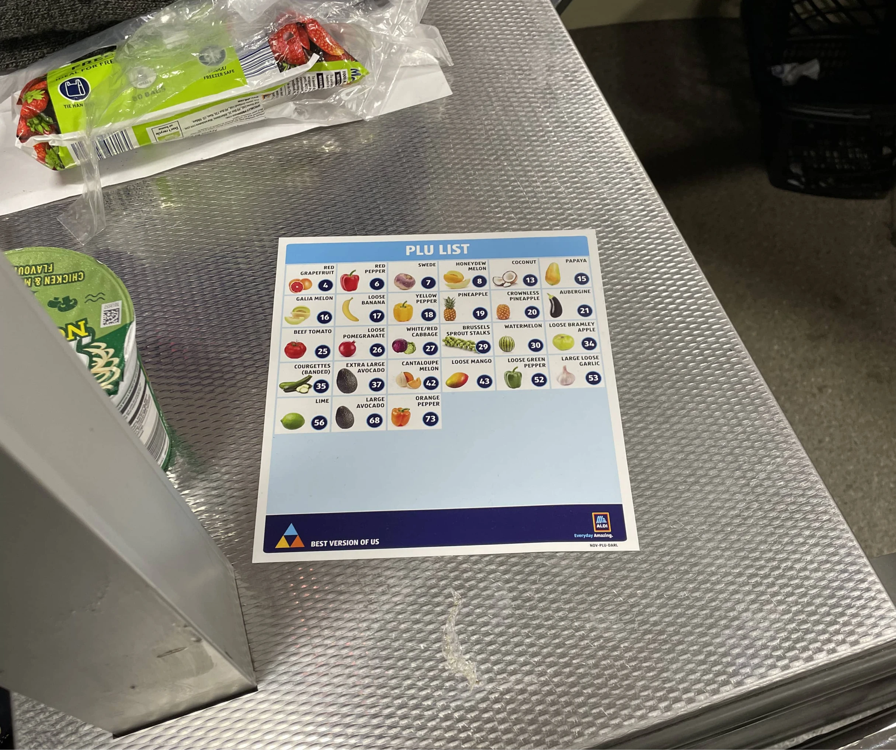
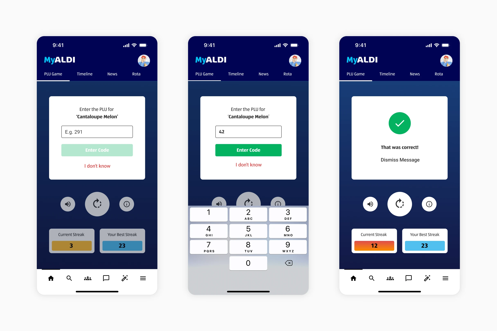
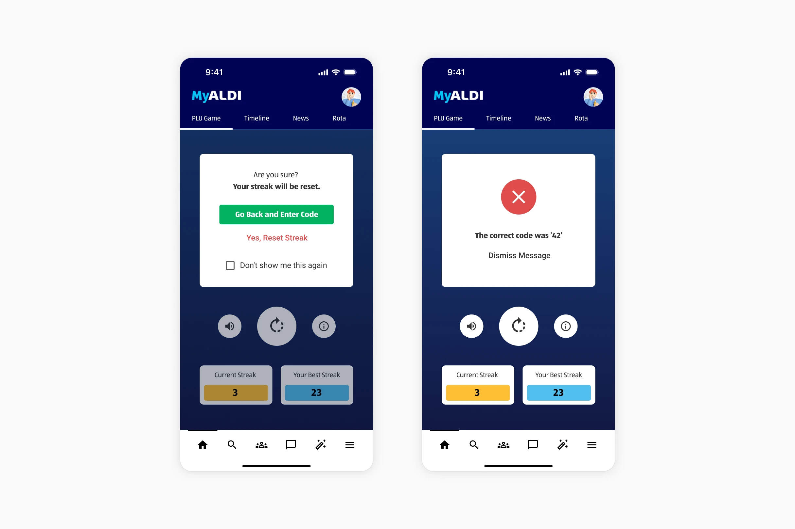
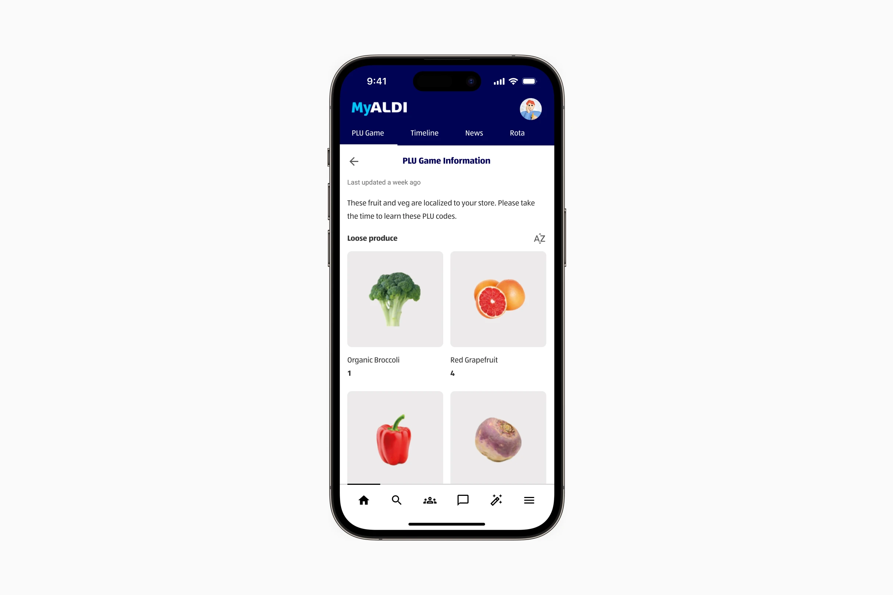

Context and problem
Aldi wanted to ensure checkout times were as efficient as they could be. To achieve this, they wanted to create a gamified applet that would allow staff to memorise product look up codes for loose produce. The hope was to reduce wait times further.

Gamifying the problem
The fruit machine inspired applet was available to shop floor staff on Oak Engage's intranet app.
The aim was to bolster staff confidence on the tills and have them enter the codes from memory. This would avoid having to pause scanning, search for a PLU sheet, and enter the code.



The outcome
The applet saw 268,000 plays in 3 days following the release. We also logged correct streaks of 20 and higher during this same period.